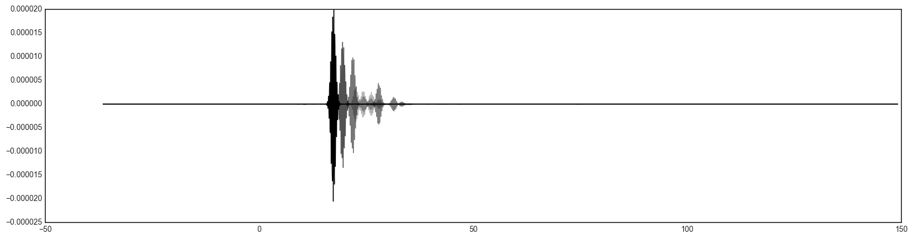
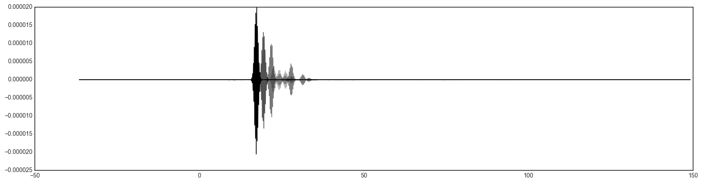
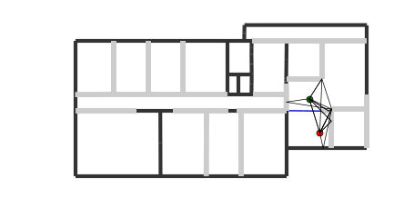
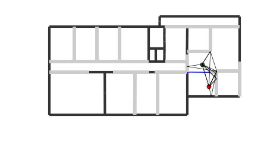
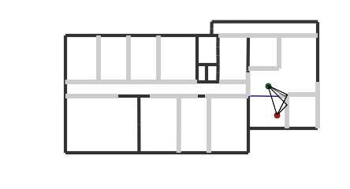
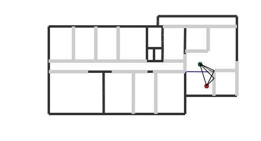
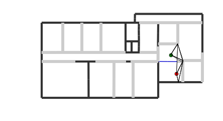
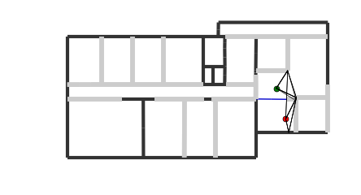
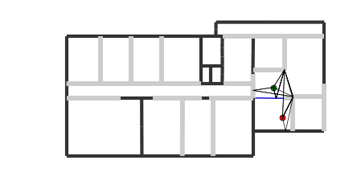
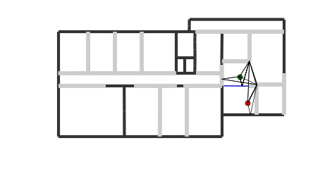

!date
dimanche 5 novembre 2017, 17:55:56 (UTC+0100)
Sorting and Cutting¶
import mayavi.mlab as mlab
from pylayers.simul.link import *
from pylayers.antprop.rays import *
from pylayers.antprop.channel import *
from pylayers.antprop.signature import *
import pylayers.util.pyutil as pyu
from pylayers.gis.layout import *
from pylayers.util.project import *
import pylayers.signal.bsignal as bs
from datetime import datetime
import time
import pickle
import numpy as np
import pylayers.signal.waveform as wvf
import matplotlib.cm as cm
#import matplotlib.pyplot as plt
%matplotlib inline
# Set the frequency range
fGHz = np.arange(2,6,0.01)
# Define the Layout
L = Layout('DLR2.lay')
# Create a link for the Layout
S = DLink(L=L,fGHz=fGHz)
S.eval(force=1,verbose=False,diffraction=1,cutoff=5)
#S._show3()
f,a=S.H.plot(idx=[0,1,2,3,4,20])
Signatures: 0%| | 0/100 [00:00<?, ?it/s]
Warning Unable to read graph Gr
Warning Unable to read graph Gw
Layout Graph loaded
Signatures: 33%|???????????? | 33.3333333333/100 [00:06<00:12, 5.41it/s]/home/uguen/Documents/rch/devel/pylayers/pylayers/util/geomutil.py:3553: RuntimeWarning: invalid value encountered in double_scalars
ratio = np.linalg.norm(tahe[1]-tahe[0])/np.linalg.norm(p1-p0)
Signatures: 100.0it [00:12, 10.72it/s]
Warning : IntR class implemented for mat with only 1 layer

S.wav
{'Np': 3000,
'WGHz': 0.499,
'fGHz': [],
'fcGHz': 4.493,
'feGHz': 100,
'te': 0.01,
'threshdB': 3,
'twns': 30,
'typ': 'generic'}
Position of the transmitter
S.a
array([ 27.23497578, -3.37396874, 1.2 ])
Position of the receiver
S.b
array([ 26.03317253, 0.50907312, 1.2 ])
fig=plt.figure(figsize=(20,5))
S.H.show(fig=fig)
(<matplotlib.figure.Figure at 0x7fb65f14e950>,
[<matplotlib.axes._subplots.AxesSubplot at 0x7fb65f14e590>,
<matplotlib.axes._subplots.AxesSubplot at 0x7fb65f0ad5d0>])

u = S.H.sort(typ='tau')
print u
[ 0 3 4 1 2 5 6 7 14 8 9 15 17 16 19 18 21 20
41 42 10 22 11 12 23 24 25 26 43 27 28 29 44 45 46 47
48 13 49 50 52 51 91 92 30 31 93 94 32 53 33 54 55 56
58 57 59 95 34 35 60 96 61 62 97 98 63 99 64 65 66 67
100 101 102 103 104 105 106 178 107 108 36 109 68 179 180 181 69 110
111 112 113 114 115 70 116 182 183 37 184 186 185 187 188 71 72 189
190 281 282 191 73 117 118 119 120 192 193 74 121 75 283 284 122 123
38 124 125 126 39 194 76 127 77 128 196 195 197 198 78 199 201 200
202 203 285 286 129 130 131 287 288 79 132 133 204 80 134 205 135 81
136 40 137 206 207 82 289 290 83 138 139 208 84 140 209 141 210 211
213 212 214 142 85 86 143 144 145 215 146 147 148 216 218 217 219 291
292 220 149 221 150 222 293 151 295 294 223 296 224 225 298 297 226 227
229 228 300 299 230 152 302 301 303 362 361 231 304 232 306 305 153 87
233 154 88 363 307 308 234 155 156 235 309 157 158 89 310 90 236 159
312 311 238 237 160 161 162 239 163 164 240 165 241 242 243 244 245 365
364 246 314 313 247 248 249 250 166 316 315 318 317 167 319 320 251 252
253 254 168 169 255 256 257 321 322 324 323 170 325 258 326 327 171 259
260 172 173 261 262 263 264 328 329 265 266 330 174 267 332 331 268 333
269 270 334 335 336 338 337 339 340 366 367 368 341 271 369 342 343 344
370 371 345 175 373 372 272 388 273 375 374 347 346 348 176 376 274 377
275 276 349 350 351 378 379 390 389 177 352 380 353 354 381 277 278 382
383 391 392 393 394 355 356 279 357 358 280 359 360 384 385 386 387]
fig=plt.figure(figsize=(20,5))
S.H.show(fig=fig)
(<matplotlib.figure.Figure at 0x7fb65f0f5a10>,
[<matplotlib.axes._subplots.AxesSubplot at 0x7fb65f0f5890>,
<matplotlib.axes._subplots.AxesSubplot at 0x7fb65ee8e0d0>])
Let sort the \(H\) channel by energy
#u = S.H.sort(typ='energy')
#fig=plt.figure(figsize=(20,5))
#S.H.show(fig=fig,cmap=cm.jet)
wav = wvf.Waveform(fcGHz=4,bandGHz=4)
wav.show()
h = S.H.totime()
# applyu waveform
h.y.shape
(395, 1, 1, 1203)
print h.x.shape
print h.y.shape
(1203,)
(395, 1, 1, 1203)
h.y
array([[[[ -8.84640250e-07+0.j, -2.95891635e-05+0.j, -2.79501434e-05+0.j,
..., 7.11271584e-07+0.j, 2.97617735e-05+0.j,
2.77774080e-05+0.j]]],
[[[ -1.55259164e-06+0.j, 1.69641272e-05+0.j, 2.37751449e-05+0.j,
..., 1.66419664e-06+0.j, -1.70747975e-05+0.j,
-2.36643414e-05+0.j]]],
[[[ -2.01300323e-06+0.j, 1.14299650e-05+0.j, 2.05064784e-05+0.j,
..., 2.09826715e-06+0.j, -1.15143061e-05+0.j,
-2.04220084e-05+0.j]]],
...,
[[[ -1.26465240e-09+0.j, -1.07994591e-09+0.j, 4.46189145e-10+0.j,
..., 1.25629641e-09+0.j, 1.06626281e-09+0.j,
-4.42272656e-10+0.j]]],
[[[ 1.08607744e-09+0.j, 3.94472614e-09+0.j, 2.56377092e-09+0.j,
..., -1.09464758e-09+0.j, -3.94297943e-09+0.j,
-2.56547971e-09+0.j]]],
[[[ 5.73365139e-10+0.j, 4.02029385e-09+0.j, 3.14869656e-09+0.j,
..., -5.70935174e-10+0.j, -4.02277662e-09+0.j,
-3.15049216e-09+0.j]]]])
S.H.taud
array([ 13.54922922, 15.73472632, 18.09921579, 18.18926205,
19.42525108, 19.87081413, 20.10573256, 21.00810271,
21.63886507, 21.79103609, 22.83287935, 23.41453569,
24.15743389, 24.15743389, 27.03422376, 27.03422376,
27.88082458, 27.88082458, 28.35913401, 28.35913401,
29.3706625 , 30.44069342, 30.48415259, 31.00628966,
31.16463407, 31.51640144, 31.72752458, 32.02171136,
32.17505893, 32.3583152 , 32.76100669, 33.24740589,
33.3325751 , 33.39512565, 34.51174529, 35.53358715,
35.53358715, 36.18098635, 36.45934118, 36.45934118,
36.89701883, 36.89701883, 37.03018251, 37.03018251,
37.05487517, 37.93836057, 38.04024925, 38.04024925,
38.11907362, 38.7726605 , 39.57398772, 39.79094372,
40.37450314, 40.92601327, 41.34082454, 41.34082454,
41.35336146, 41.70058227, 41.92311287, 42.06519118,
42.60359435, 42.64901596, 42.67958988, 42.8191582 ,
42.88728486, 42.88728486, 43.27513842, 43.34819779,
43.41721672, 43.60673563, 43.74334588, 43.84537781,
43.95561989, 44.00838108, 44.14809971, 44.26134037,
44.34073189, 44.34073189, 44.56924002, 44.67769601,
44.90810177, 45.04502978, 45.43152434, 45.45786132,
45.48100497, 45.55149352, 45.55149352, 45.56420218,
46.13050405, 46.17923573, 46.44940681, 46.44940681,
46.57768037, 46.57768037, 46.83303052, 46.98960953,
47.03745118, 47.06449034, 47.06449034, 47.23988787,
47.51139597, 47.67323783, 47.67323783, 47.80224585,
47.80224585, 47.91249322, 48.16157885, 48.19146351,
48.19146351, 48.29178523, 48.29178523, 48.3459693 ,
48.74019908, 48.82148786, 49.63403748, 49.63893033,
49.63893033, 49.68422097, 49.68422097, 49.797206 ,
50.43571875, 50.63288924, 50.92477538, 50.92477538,
51.14923155, 51.22266808, 51.23284215, 51.26099368,
51.29919109, 51.29919109, 51.41116852, 51.77107192,
51.85367986, 51.98491479, 52.02987842, 52.03546361,
52.14918673, 52.14918673, 52.53802326, 52.596876 ,
52.79307008, 53.35195747, 53.66341142, 53.66341142,
54.43977841, 54.43977841, 54.9203413 , 54.9203413 ,
54.9982192 , 55.16437482, 55.16437482, 55.69947365,
55.69947365, 56.49042586, 56.53990649, 57.05408149,
57.1030737 , 57.51754473, 57.75091527, 57.79931683,
58.0712317 , 58.67884815, 59.22167863, 59.39305334,
59.89329862, 59.92635659, 59.92635659, 59.92941502,
59.97300247, 59.97300247, 59.97886659, 60.03087369,
60.51003584, 60.5615868 , 60.59319091, 60.85610752,
60.89554952, 61.16751129, 61.21850861, 61.37968575,
61.99360628, 61.99360628, 62.02794389, 62.30692572,
62.32799173, 62.47007004, 62.58201463, 62.67004695,
62.67004695, 62.81841284, 62.83930739, 62.98023222,
63.00847321, 63.09127163, 63.22550464, 63.22550464,
63.26249611, 63.27484331, 63.27484331, 63.4519739 ,
63.47265989, 63.51431096, 63.61218162, 63.72211983,
63.76631881, 63.94255287, 64.05830019, 64.05830019,
64.14099856, 64.39055377, 64.44105887, 65.05882006,
65.43816159, 65.43816159, 65.45821991, 65.45821991,
65.59351836, 65.59351836, 65.70014121, 65.70014121,
65.82254987, 65.88588383, 66.10648755, 66.10648755,
66.30692325, 66.34865043, 66.34865043, 66.369795 ,
66.90745901, 66.96976697, 66.99738852, 66.99738852,
67.92938614, 67.9607514 , 68.39884137, 68.42999146,
68.77790038, 68.79395374, 68.8545546 , 68.8545546 ,
68.98116773, 69.01205497, 69.24160296, 69.28141168,
69.74176657, 69.81690039, 70.20208487, 70.30987655,
70.31297181, 70.45195486, 70.65644146, 70.76354104,
70.81243889, 70.81243889, 70.8425277 , 70.8425277 ,
70.90471031, 70.99035803, 71.0377681 , 71.22031114,
71.32656406, 71.33632935, 71.43970138, 71.46662118,
71.48681345, 71.62680769, 71.78350706, 71.99743699,
72.04418434, 72.11042924, 72.11042924, 72.33859195,
72.99542944, 72.99542944, 73.09910219, 73.09910219,
73.23576956, 73.23576956, 73.65778673, 73.75385368,
73.75385368, 73.79948846, 73.79948846, 73.86776865,
74.08692115, 74.08692115, 74.09095455, 74.29971229,
74.62887876, 74.83613596, 75.06260295, 75.29341388,
75.48771 , 75.71722508, 76.24367629, 76.32476365,
76.32476365, 76.52742806, 76.52742806, 77.34559844,
77.68136431, 77.75822528, 77.90441691, 77.90441691,
78.18396968, 78.2709499 , 78.592195 , 79.01965292,
79.08372701, 79.099514 , 79.33774991, 79.42358307,
79.48733156, 79.74006873, 79.88955875, 79.9256251 ,
79.98897348, 80.24013061, 80.30719913, 80.43676707,
80.70150628, 80.70150628, 80.70468532, 80.83361613,
80.98768061, 81.19880684, 81.3233407 , 81.32695431,
81.38184325, 81.51138294, 81.51138294, 81.57349985,
81.57349985, 81.71588427, 81.81979321, 81.81979321,
81.87187802, 82.07239423, 82.20392778, 82.46137213,
82.76017299, 82.76017299, 82.8859065 , 82.8859065 ,
82.94502935, 83.17474571, 83.42064739, 83.42064739,
83.55859217, 83.7465566 , 84.03593472, 84.47412559,
84.47412559, 85.54553363, 85.54553363, 86.78179008,
87.06561183, 87.14975094, 87.43237823, 87.60752872,
87.88868393, 88.334265 , 88.41741723, 88.5882879 ,
88.69578554, 88.77859917, 88.94877601, 89.05660609,
89.05660609, 89.10436456, 89.14562453, 89.22802066,
89.33320079, 89.33320079, 89.39734198, 89.46277317,
89.90877478, 90.57009646, 90.57009646, 90.65119784,
90.65119784, 90.81786583, 90.81786583, 91.32134352,
91.32134352, 96.31614982, 96.64781796, 97.06080937,
97.06293441, 97.39205941, 97.80190814, 98.37073099,
98.37073099, 99.10203447, 99.10203447])
S.H.y.shape
(395, 1, 1, 400)
u = S.H.sort(typ='tau')
Ehf = np.sum(np.abs(S.H.y),axis=-1)
Ehf.shape
plt.plot(h.taud,abs(Ehf[:,0,0]))
[<matplotlib.lines.Line2D at 0x7fb65da4f990>]

Eh = np.sum(np.abs(h.y),axis=-1)
Eh.shape
(395, 1, 1)
plt.plot(h.taud,abs(Eh[:,0,0]))
[<matplotlib.lines.Line2D at 0x7fb65d98af10>]

hw = S.H.applywav(wav.sfg)
/home/uguen/Documents/rch/devel/pylayers/pylayers/signal/bsignal.py:1243: VisibleDeprecationWarning: converting an array with ndim > 0 to an index will result in an error in the future
pstop2 = pstart2 + np.where(u2.x[pstart2:dim2]==xnew[-1])[0]
/home/uguen/Documents/rch/devel/pylayers/pylayers/signal/bsignal.py:1358: VisibleDeprecationWarning: converting an array with ndim > 0 to an index will result in an error in the future
x_new = self.x[imin:imax]
/home/uguen/Documents/rch/devel/pylayers/pylayers/signal/bsignal.py:1363: VisibleDeprecationWarning: converting an array with ndim > 0 to an index will result in an error in the future
y_new = self.y[..., imin:imax]
/home/uguen/Documents/rch/devel/pylayers/pylayers/antprop/channel.py:4326: VisibleDeprecationWarning: using a non-integer number instead of an integer will result in an error in the future
rir = np.zeros((shy[0],N))
Nray = h.y.shape[0]
ir = 0
it = 0
plt.figure()
tEk1 = []
tEk2 = []
for k in range(Nray):
Ek = np.sum(h.y[k,ir,it,:]*h.y[k,ir,it,:])
tEk1.append(Ek)
alpha=np.sqrt(tEk1)/max(np.sqrt(tEk1))
plt.figure(figsize=(20,5))
for k in range(Nray):
plt.plot(h.x,h.y[k,ir,it,:]+0.001*k,'k',alpha=alpha[k])
plt.figure(figsize=(20,5))
for k in range(Nray):
Ek = np.sum(hw.y[k,:]*hw.y[k,:])
tEk2.append(Ek)
plt.plot(hw.x,hw.y[k,:],'k',alpha=max(alpha[k],0.3))
/home/uguen/anaconda2/lib/python2.7/site-packages/numpy/core/numeric.py:482: ComplexWarning: Casting complex values to real discards the imaginary part
return array(a, dtype, copy=False, order=order)
<matplotlib.figure.Figure at 0x7fb65d7d8210>
/home/uguen/anaconda2/lib/python2.7/site-packages/matplotlib/backends/backend_agg.py:166: ComplexWarning: Casting complex values to real discards the imaginary part
self._renderer.draw_path(gc, path, transform, rgbFace)
 

Ray visuzalization¶
S.R.show(L=S.L,rlist=u[10:20])
(<matplotlib.figure.Figure at 0x7fb65c6c3b90>,
<matplotlib.axes._subplots.AxesSubplot at 0x7fb65c613210>)
 

S.R.keys()
[2, 3, 4, 5, 6, 7, 8, 9, 10]
S.R
Rays3D
----------
2 / 3 : [0 1 2]
3 / 11 : [ 3 4 5 6 7 8 9 10 11 12 13]
4 / 27 : [14 15 16 17 18 19 20 21 22 23 24 25 26 27 28 29 30 31 32 33 34 35 36 37 38
39 40]
5 / 50 : [41 42 43 44 45 46 47 48 49 50 51 52 53 54 55 56 57 58 59 60 61 62 63 64 65
66 67 68 69 70 71 72 73 74 75 76 77 78 79 80 81 82 83 84 85 86 87 88 89 90]
6 / 87 : [ 91 92 93 94 95 96 97 98 99 100 101 102 103 104 105 106 107 108
109 110 111 112 113 114 115 116 117 118 119 120 121 122 123 124 125 126
127 128 129 130 131 132 133 134 135 136 137 138 139 140 141 142 143 144
145 146 147 148 149 150 151 152 153 154 155 156 157 158 159 160 161 162
163 164 165 166 167 168 169 170 171 172 173 174 175 176 177]
7 / 103 : [178 179 180 181 182 183 184 185 186 187 188 189 190 191 192 193 194 195
196 197 198 199 200 201 202 203 204 205 206 207 208 209 210 211 212 213
214 215 216 217 218 219 220 221 222 223 224 225 226 227 228 229 230 231
232 233 234 235 236 237 238 239 240 241 242 243 244 245 246 247 248 249
250 251 252 253 254 255 256 257 258 259 260 261 262 263 264 265 266 267
268 269 270 271 272 273 274 275 276 277 278 279 280]
8 / 80 : [281 282 283 284 285 286 287 288 289 290 291 292 293 294 295 296 297 298
299 300 301 302 303 304 305 306 307 308 309 310 311 312 313 314 315 316
317 318 319 320 321 322 323 324 325 326 327 328 329 330 331 332 333 334
335 336 337 338 339 340 341 342 343 344 345 346 347 348 349 350 351 352
353 354 355 356 357 358 359 360]
9 / 27 : [361 362 363 364 365 366 367 368 369 370 371 372 373 374 375 376 377 378
379 380 381 382 383 384 385 386 387]
10 / 7 : [388 389 390 391 392 393 394]
N2Drays : 81
from 815 signatures
#Rays/#Sig: 0.0993865030675
pTx : [ 27.23497578 -3.37396874 1.2 ]
pRx : [ 26.03317253 0.50907312 1.2 ]
S.R.show(L=S.L,rlist=u[0:10])
(<matplotlib.figure.Figure at 0x7fb65c478d90>,
<matplotlib.axes._subplots.AxesSubplot at 0x7fb65c48a690>)
 

S.R.show(L=S.L,rlist=u[20:30])
(<matplotlib.figure.Figure at 0x7fb65c2b57d0>,
<matplotlib.axes._subplots.AxesSubplot at 0x7fb65c2c40d0>)
 

S.R.show(L=S.L,rlist=u[40:50])
(<matplotlib.figure.Figure at 0x7fb65c0f1110>,
<matplotlib.axes._subplots.AxesSubplot at 0x7fb65c0f19d0>)


S.R.show(L=S.L,rlist=u[50:60])
(<matplotlib.figure.Figure at 0x7fb65bfa2a10>,
<matplotlib.axes._subplots.AxesSubplot at 0x7fb65bf35310>)
 
